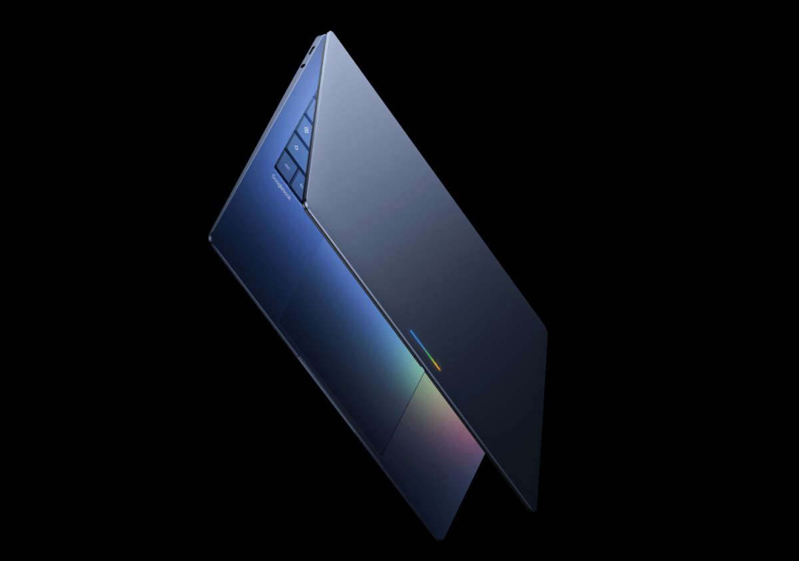
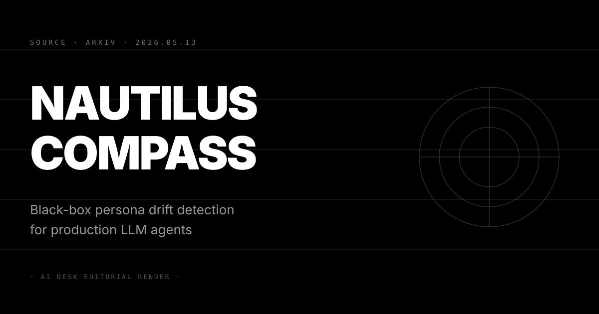
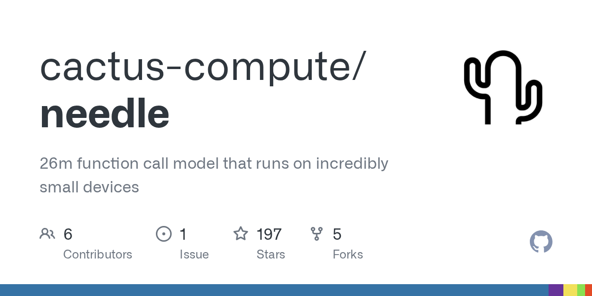

N°74 Google Android Show · Googlebooks、vibe-coded widgets、Gemini in Chrome 一次端齊 I/O 暖身

Pin · Google 在 5/19 I/O 主場前 6 天先把 Android、Chrome、Pixel 三層基建的 AI 滲透節奏全壓上去。
發生什麼
TechCrunch 5 月 12 日報導 Google Android Show 2026 開講。這場專題會議定位是 Google I/O 2026 的暖身演習，Google 把過去六個月在 Android、Chrome、Pixel 三條產品線的 AI 整合方向一次攤開，重點分四塊。第一塊是 Googlebooks，一條 AI-first 筆電產品線，與 Pixelbook 並行但定位更貼 Chromebook 的教育與企業客群，內建 Gemini Nano 4 與 Project Astra 級的多模態 agent，目標補上 Google 在 ChromeOS 終端的 AI 故事。
第二塊是 vibe-coded Android widgets。Google 把 Material You 的 widget 框架打開給 Gemini 直接生成，使用者用一句中文或英文描述就能在主畫面上產生對應的 widget，背後的執行邏輯走 Android 17 的 on-device agent runtime。第三塊是 Gemini in Chrome 的全面整合，從現有的側邊欄擴張為瀏覽器內建的 agent 介面，能接管多分頁的 task、自動填表、跨網站資料彙整，這條路徑直接對標 OpenAI 的 Atlas browser 與 Anthropic 的 Claude Computer Use。第四塊是新版 Android Auto，把 Gemini 接進車載 UI，支援自然語音控制與多模態場景理解。
TechCrunch 給這場 Android Show 的策略定位是「I/O 之前的滲透演習」。原文用詞中性，沒有帶情緒語言。文章引用 Google Android 產品副總裁 Sameer Samat 在現場的補充：Aluminum OS 整合框架已進入 Pixelbook 與 Pixel 平板的 OEM 階段，預期 5/19 keynote 會把硬體實機正式公開。從這場暖身演習回看 5/12 N°71 預告的四箭齊發，今天揭露的是「四箭」中端側基建與消費者體驗兩條，5/19 主場會留給 frontier 模型與 agent platform 兩條。
為什麼重要
第一，Google 在 I/O 前 6 天先公開消費者層的 AI 整合，等於拿出「不論 Gemini 4 在 frontier benchmark 上落後多少，Google 都已把 AI 鋪滿 user 端」的故事。過去三年 Google 的問題是 frontier 評測落後 Anthropic 與 OpenAI 半個世代，這次先用 Android Show 把 distribution 層的 AI 接入面攤開，等於把對話從「誰的模型強」拉到「誰的 AI 真的進到 user 手上」。對讀者：未來六個月 Google 在 AI 戰場的主場是分發層而不是模型層，這條敘事會被 Sundar Pichai 在 5/19 keynote 上重述。
第二，vibe-coded widgets 是 Google 第一次把 generative UI 推到 OS 級別。OpenAI 的 GPT Store 與 Anthropic 的 Claude Artifacts 都已開放使用者用自然語言生成介面元件，但都停在 web app 層；Google 把這套機制直接推進 Android 主畫面，意味著未來 Android 應用生態的 distribution 模型會出現變化——使用者不再下載 app，而是用一句話請 Gemini 產生一塊 widget。對 Android 開發者：app store 的角色定位會從「分發 app」轉成「分發 component」，2026 下半年 Play Store 的政策更新值得追蹤。
第三，Gemini in Chrome 的全面整合是 Google 對 OpenAI Atlas 與 Anthropic Computer Use 的直接答覆。Atlas browser 與 Claude Computer Use 在 2026 Q1 已把 frontier lab 的 agent 戰場從 API 拉到瀏覽器層，Google 用 Chrome 27 億 MAU 的 distribution 規模反擊。如果 Gemini in Chrome 的功能對齊 Atlas 且預設啟用，frontier lab 在「瀏覽器是 agent 主戰場」這條戰役上的開局劣勢會被快速補上。對 OpenAI 與 Anthropic：未來三個月需要說服企業客戶為什麼要用 Atlas 或 Computer Use 而不是直接用免費的 Gemini in Chrome。
我們的判斷
三個看點：
(1) Google Android Show 透露的真正訊號是 Aluminum OS 已進入 OEM 階段，這比 Gemini 4 本身更值得關注。Aluminum OS 把 ChromeOS 與 Android 框架合一，是 Google 對齊微軟 Windows 與蘋果 macOS / iOS 的硬體支點。如果 5/19 keynote 真的公開 Pixelbook 與 Pixel 平板的 Aluminum OS 實機，加上 OEM partner 名單（過去傳聞包含 ASUS、Lenovo、HP），Google 會在 Q3 拿到「跨終端 agent runtime 唯一硬體供應者」的單一定位。對讀者：判斷 Aluminum OS 落地速度的關鍵指標是 5/19 之後 30 天內第三方 OEM 是否公開時程表。
(2) vibe-coded widgets 在開發者社群會引發兩極反應，預期一週內出現「Google 把 Android 應用開發民主化」與「Google 把 Android 應用品質拉低」兩派論戰。支持派的論點是 generative UI 把長尾使用情境拉進主流，反對派的論點是 Gemini 生成的 widget 安全性、效能、設計品質都會落後人工開發。從 OpenAI GPT Store 過去 18 個月的經驗看，generative app 的長尾品質確實參差，Google 是否能用 Aluminum OS 級的 sandboxing 與審核機制守住底線是這條策略的關鍵。對 Android 開發者：建議追蹤 5/19 之後 Google 公開的 widget 審核政策與 sandboxing 文件，比 demo 本身更重要。
(3) 反方觀點：Google 過去四年的 demo-to-shipping 落差是結構性問題，Android Show 揭露的功能未必能在 Q3 進入用戶手上。2024 I/O 的 Project Astra demo 至今仍在受限名單內、Gemini 1 開放後實測落後 ChatGPT 半年、Genie 影片生成 demo 也未開放，Google 在會議上的承諾與實際出貨之間有 6 至 12 個月的時差。對讀者：Android Show 的四塊宣布中，Gemini in Chrome 因為已有 Chrome 28 億用戶基底最有條件快速落地，Googlebooks 與 Aluminum OS 因為涉及硬體會在 Q3 末才看到第一波出貨，vibe-coded widgets 因為涉及審核機制是最慢的一塊，預期 Q4 才會在 Pixel 12 Pro 系列上看到完整功能。
N°75 Stratechery · Ben Thompson 拆 Anthropic × xAI 結盟 · Musk 該轉做 SpaceXAI 對外服務

Pin · Anthropic 拿到 SpaceX Colossus 1 算力 · xAI 拿到 Anthropic 企業銷售通道 · Musk 該把 xAI 變成對外服務型 frontier lab。
發生什麼
Ben Thompson 5 月 13 日在 Stratechery 發出長文 SpaceX and Anthropic, xAI's Two Companies, Elon Musk and SpaceXAI's Future。文章接續 5/7 N°50 揭露的 Anthropic 包下 SpaceX Colossus 1 算力協議與 5/11 N°67 的 xAI 退出前線爭議，給出一條完整的結構性解讀。Thompson 的核心論點：這宗合作不令人意外，反而是 xAI 內部兩條子業務拆分的必然結果。
第一條業務是 xAI 的 frontier lab 部門，過去 18 個月在 Grok 系列上投入超過 80 億美元，但在 frontier 評測榜單上始終落後 Anthropic 與 OpenAI 半個世代。第二條業務是 xAI 的 neocloud 部門，把 Colossus 1 與 Colossus 2 的算力基建商品化對外出租。Thompson 認為 Musk 的問題在於 xAI 同時跑這兩條業務但兩條都做不好——frontier 部門被 Anthropic 與 OpenAI 壓住、neocloud 部門又因為 SpaceX 內部算力需求優先而對外供給不穩定。
Anthropic 包下 Colossus 1 的協議實際上等於把 neocloud 業務的一個大客戶鎖死，xAI 的 frontier 部門則被結構性邊緣化。Thompson 給 Musk 的建議是把 xAI 直接收進 SpaceX，改名 SpaceXAI，從 frontier lab 轉型成「對外服務其他 frontier lab 的算力與基建供應商」。這個轉向放棄 Grok 與其他 frontier lab 競爭的野心，但能讓 SpaceX 的算力資源獲得對齊的商業模式。文章結語把這宗合作視為 frontier lab 戰場的成熟訊號：算力供應與模型開發第一次出現明確的分工，frontier lab 不再需要自有算力基建。
為什麼重要
第一，這是 frontier lab 戰場第一次出現「模型與算力分家」的結構性論述。過去三年 frontier lab 都假設算力護城河需要自有，OpenAI 跟微軟綁、Anthropic 跟 AWS Google 三家綁、xAI 自建 Colossus、Meta 自建 Llama 集群。Thompson 的論點挑戰這個前提，他認為 Anthropic 包下 Colossus 1 顯示 frontier lab 可以用採購方式取得 frontier 算力而不損失能力。對讀者：未來 12 個月會出現「算力供應商」這個獨立子產業，主要玩家是 Nvidia 與 SpaceX，frontier lab 的資本配置會從「自建算力」轉向「鎖定供應」。
第二，Musk 的「SpaceXAI」轉型建議在資本市場會被解讀為 xAI frontier 故事的正式結束。xAI 在 2025 年的 600 億美元估值有相當比例押在 Grok 系列追上 frontier 的可能性上。Thompson 在 Stratechery 的影響力會把這條敘事帶進華爾街，預期未來 60 天內 xAI 的估值會出現重估討論。對 xAI 投資人：建議追蹤 Musk 是否在 5 月底前公開回應 Thompson 的觀點，沉默本身會被解讀為默認。
第三，Anthropic 的下一步動作會把 SpaceX Colossus 1 的算力轉化為 enterprise agent 的競爭優勢。5/10 N°60 已揭露 Anthropic 年化營收衝到 440 億美元，主要靠 Claude Code 與 enterprise agent；現在拿到 Colossus 1 等於把 inference 端的瓶頸打開，未來六個月 Claude Code 的響應速度、Claude Computer Use 的並行 task 數量、Claude Sonnet 的價格曲線都會出現結構性變化。對企業客戶：2026 Q3 的 Anthropic 報價可能會出現 20 至 30% 的下調，預算採購時程可以延後評估。
我們的判斷
三個看點：
(1) Thompson 的「SpaceXAI」名稱本身會被 Musk 採用機率不高，但業務拆分的方向幾乎確定。Musk 的個人品牌與 xAI、Grok 高度綁定，公開承認 frontier 路線失敗的政治成本太高。預期 Musk 會用「擴大基建版圖」這類包裝語言推進實質拆分，把 Colossus 系列正式轉成 SpaceX 子公司，把 xAI 的 frontier 業務縮減到只服務 X 與 Tesla 內部需求。對讀者：未來三個月觀察的關鍵指標是 xAI 招聘新 frontier 研究員的速度，如果出現結構性放緩，等於默認 frontier 路線收縮。
(2) Anthropic 與 xAI 的結盟會被反壟斷監管列入觀察名單。5/12 N°72 提到 CAISI 把 Anthropic 排除在政府測試名單外，原因是五角大廈合約爭議；現在 Anthropic 與 xAI 的算力結盟在 frontier lab 圈內製造出「Anthropic + xAI vs. OpenAI + Microsoft + Google」的雙陣營結構。Lina Khan 在 FTC 任內留下的 AI 反壟斷框架仍有效，預期 Q3 內會出現針對算力結盟的正式調查請求。對 Anthropic 投資人：監管風險已從「政府訂單」擴大到「算力供應結構」。
(3) 反方觀點：Thompson 的拆分建議忽略 xAI 的 X 平台流量優勢，frontier lab 真正的稀缺資源是用戶資料不是算力。批評派的核心論點：Grok 在 X 平台上已累積超過 1 億 weekly active user，這個流量入口是 OpenAI 與 Anthropic 都沒有的結構性優勢；Musk 把 xAI 拆出去等於放棄這條 distribution 護城河。Thompson 的論述把 frontier lab 估值簡化為「frontier 能力 + 算力 + 銷售通道」三因子，但忽略了 distribution 與用戶資料的長期價值。對讀者：判斷 Thompson 建議是否成立的關鍵，是 Grok 在 X 平台的 weekly active user 留存與 ARPU，如果這兩個指標在 Q3 出現持續性提升，xAI 維持獨立 frontier 路線就有資本市場支撐。
N°76 Threads × Meta AI · 直接複製 Grok 形態 · 對話入口戰場從 feed 升級到 LLM 助理
Pin · Meta 把 Threads 的對話入口從內容 feed 升級為 LLM 助理 · 跟 X 的 Grok 形態直接對標。
發生什麼
TechCrunch 5 月 12 日揭露 Meta 在 Threads 平台測試新的 Meta AI 整合功能。整合形態高度類似 X 平台的 Grok 互動模式：使用者可以在貼文討論串內直接 @ Meta AI 取得即時趨勢脈絡、突發新聞背景、熱門話題的歷史軸線，也能要 Meta AI 用個人化推薦解釋為什麼某條貼文出現在自己的 feed。功能目前在小規模 beta 用戶內測試，預期 Q3 全面開放。
Meta AI 在 Threads 內的回答介面用 collapsible 卡片呈現，可以展開查看 Meta AI 引用的 8 至 12 個原始貼文，並標示資料來源的 verified 等級。Meta 在內部聲明中強調這次整合不會用 Threads 用戶的私訊內容做訓練資料，公開貼文部分則照既有政策處理。Threads 從 2023 年推出以來 MAU 衝到 3.5 億，是 Meta 對 X 平台的長期戰略部署；這次接入 Meta AI 等於把 Threads 從「Twitter alternative」重新定位為「AI 助理增強型社群平台」。
TechCrunch 同步引用幾位社群研究者的補充：Meta 的時機點選在 X 平台的 Grok 月活躍對話用戶突破 8000 萬之後，是直接的競爭回應。Meta AI 在 Instagram、WhatsApp、Facebook Messenger 都已部署，Threads 是最後一塊缺口，整合完成後 Meta AI 會橫跨 Meta 全平台超過 30 億 MAU。報導沒有揭露 Meta AI 在 Threads 的具體模型版本，但 TechCrunch 推測使用 Llama 4 70B 系列搭配 Threads 即時資料的 RAG 架構。
為什麼重要
第一，社群平台 AI 客服化已從可選項變成兩強標配，X 與 Meta 雙寡頭格局在 AI 層被再次強化。過去 12 個月 X 用 Grok、Meta 用 Meta AI、TikTok 推出 AI persona、Snapchat 內建 My AI，但 X 與 Meta 是唯二把 LLM 整合做到 first-class UI 等級的平台。對讀者：未來六個月內，社群平台的競爭軸線會從「演算法品質」轉到「平台內 AI 助理品質」，使用者選平台的決策因素加上一條「AI 助理的回答深度」。
第二，Meta AI 跨平台 30 億 MAU 的覆蓋範圍是 OpenAI ChatGPT 7 億 weekly active user 的 4 倍以上，distribution 層的戰局正在被重新洗牌。ChatGPT 仍是 frontier 對話介面的代名詞，但使用者必須主動打開 app 或網站；Meta AI 接入 WhatsApp Threads Instagram 是把 AI 助理放進使用者本來就在的場景。對 OpenAI：未來 12 個月 ChatGPT MAU 增長的瓶頸不是 frontier 能力，而是 distribution 通路；蘋果 Siri 整合與 Microsoft Copilot 全面綁定是兩條可能的反制路徑。
第三，Threads × Meta AI 的個人化解釋功能會把「為什麼演算法給我看這條」變成可審計的 AI 對話。使用者可以直接問 Meta AI 為什麼某條貼文出現在 feed，這在歐盟 DSA 與英國 Online Safety Act 的監管框架下會被視為對「演算法透明度」的合規回應。對 Meta：這條功能在政策層的價值高於使用者體驗本身，是 Meta 主動拿出來與監管機關談判的籌碼。對監管：演算法透明度的爭議會從「強制揭露程式碼」轉到「強制提供 AI 解釋介面」，標準會被軟化但範圍會被擴大。
我們的判斷
三個看點：
(1) Threads × Meta AI 整合對 X 的 Grok 是結構性壓制，X 在社群平台 AI 戰場會被推向二線。Threads 3.5 億 MAU 對 X 5.6 億 MAU 仍有差距，但 Meta AI 跨平台 30 億的後援是 Grok 沒有的。Grok 的另一個劣勢是 5/13 N°75 揭露的 xAI frontier 路線收縮，Grok 模型的更新速度會被 SpaceX 算力商品化邏輯拖慢。對 X 投資人：Grok 流量增長若在 Q3 出現放緩，會直接拖累 X 的廣告 ARPU 估值。
(2) Meta AI 在 Threads 的 RAG 架構若效果良好，會壓縮 Perplexity 等獨立 AI 搜索產品的差異化空間。Perplexity 過去三年的差異化是「即時資訊 + 引用」，Meta AI 在 Threads 內直接做即時貼文 RAG 加引用，等於把 Perplexity 的核心使用情境內建到 30 億 MAU 平台。對 Perplexity：6/30 前需要找出 Meta AI 做不到的差異化場景，否則企業客戶採購會出現結構性流失。
(3) 反方觀點：Meta 把 Threads 變成 AI 助理介面會稀釋 Threads 的社群屬性，年輕用戶可能轉移到無 AI 干預的小眾平台。批評派的核心論點：社群平台的核心價值是「人與人」而不是「人與 AI」，過度整合 AI 會讓使用者體驗變成「在 AI 與人之間做切換」而失去純粹的社群感。Bluesky 與 Mastodon 在 2025 年的 MAU 增長部分原因就是反 AI 整合的逆向偏好。對 Meta：beta 測試階段的關鍵指標是使用者主動 @ Meta AI 的頻率，如果頻率高代表整合成功，如果頻率低且 feed 互動下降，整合會被解讀為使用者體驗減損。
N°77 arXiv · Nautilus Compass · 黑盒偵測 production LLM agent 的 persona drift

Pin · agent 在長對話會忘記用戶約束、重犯被指正錯誤、虛構先前共識 · 黑盒方法第一次能在生產環境抓到這三類漂移。
發生什麼
arXiv 5 月 12 日上線新論文 Nautilus Compass: Black-box Persona Drift Detection for Production LLM Agents。作者來自 MIT CSAIL 與 Anthropic 的安全研究子團隊，論文編號 arXiv:2605.09863。核心貢獻是給出一套不需要存取模型內部參數的黑盒偵測方法，能在 production 環境的 LLM agent 對話中即時識別三類人格漂移：第一類是 constraint forgetting（agent 忘記使用者設定的約束條件），第二類是 error recurrence（agent 重複犯下被使用者指正過的錯誤），第三類是 consensus fabrication（agent 虛構之前對話中根本沒達成的共識）。
方法的核心是用一組「探測查詢」（probe queries）週期性測試 agent 的內部狀態。探測查詢設計成不打斷主對話流程但能驗證 agent 是否仍記得關鍵約束與歷史共識。作者在 GPT-5、Claude Opus 4、Gemini 2.5 Pro、DeepSeek V3 四個 frontier 模型上做了實測。結果顯示在 50 輪以上的對話中，四個模型都出現顯著的 persona drift：GPT-5 的 constraint forgetting 比例 18%、Claude Opus 4 為 11%、Gemini 2.5 Pro 為 24%、DeepSeek V3 為 31%。
Nautilus Compass 框架以開源形式釋出 Python 套件，整合 LangChain、LlamaIndex、Anthropic SDK 三個主流 agent 框架。論文標榜對 production 環境的低侵入性：每 10 輪對話插入 1 個探測查詢，整體延遲增加 3 至 5%。作者也提供了「漂移修正」的補丁方法，偵測到漂移後自動把關鍵約束重新注入 agent 的 system prompt。文章末段把這套工具定位為「LLM agent 的 production observability」，強調這是 agent 從 demo 走向企業級部署的必要基建。
為什麼重要
第一，這是 LLM agent 維運可靠度第一次有可量化、可工具化的指標。過去兩年企業客戶部署 Claude Code、GPT Codex、Cursor 這類 coding agent 時最大的痛點就是「agent 用著用著就忘記專案規範」，但缺乏可重現的偵測方法。Nautilus Compass 把這個體感問題轉成可量化的數字，企業 SRE 可以把 persona drift rate 納入 agent SLO 指標。對企業 CIO：未來六個月 agent 採購評估會出現新的合規項目「drift detection SLA」。
第二，論文揭露的四模型漂移數字會被 frontier lab 拿來重新校準競爭話術。Claude Opus 4 的 11% 漂移率是四模型最低，Anthropic 預期會在 Q3 把這個數字當作「Claude 是最適合長對話 agent」的行銷話術。GPT-5 的 18% 與 Gemini 2.5 Pro 的 24% 對 OpenAI 與 Google 是壓力。DeepSeek V3 的 31% 雖然在開源界已是領先，但跟 frontier 三家的差距會被 Anthropic 與 OpenAI 拿來反駁「inference 成本下降不代表能力對齊」（接 5/12 N°70 Stratechery inference shift 反方觀點）。
第三，「黑盒偵測」這條路徑驗證可行，會推動 AI 安全研究從「模型內部可解釋性」轉向「外部行為可觀測性」。過去三年 AI 安全主流是 mechanistic interpretability，要求存取模型內部參數做電路級分析，這條路徑在閉源 frontier 模型上幾乎走不通。Nautilus Compass 證明黑盒方法在 production 環境就能抓到有用訊號。對 AI 安全研究方向：未來 18 個月會出現一波「黑盒安全」工具，研究經費分配可能從 mechanistic interpretability 轉移到 behavioral observability。
我們的判斷
三個看點：
(1) Nautilus Compass 開源套件會在六週內成為 enterprise agent 採購的事實標準。論文同時釋出 Python 套件與整合範例，LangChain 與 LlamaIndex 的官方文件預期在 6 月底前加入示範。對企業 SRE 團隊：建議在 Q3 採購評估表中加入「是否支援 Nautilus Compass」這條問項，並要求 agent 廠商揭露在四種漂移類型上的數據。
(2) Anthropic 會在 Q3 把這套黑盒偵測方法整合進 Claude Code 的 admin dashboard。論文作者來自 Anthropic 安全子團隊，技術轉產品的路徑接近確定。Claude Code 在 4/29 N°27 揭露的全站故障事件後，Anthropic 對 agent 可觀測性的投入明顯增加，Nautilus Compass 是這條投入的延伸。對 Anthropic 企業客戶：未來六個月 Claude Code admin console 會出現 drift detection 儀表板，這是 Anthropic 對 OpenAI Codex 的差異化籌碼。
(3) 反方觀點：探測查詢方法在 adversarial 場景下容易被繞過，這套工具的 robustness 還沒在惡意用戶情境驗證。批評派的核心論點：論文的實驗都在合作場景做的（使用者按正常方式跟 agent 對話），但 production 環境會出現 prompt injection、jailbreak、惡意指令注入等對抗情境，這些情境下 agent 可能會被誘導去「看起來通過探測查詢但實際偏離約束」。對研究者：下一篇論文需要在對抗環境下重新驗證 Nautilus Compass 的偵測率，這條工作預期會在 6 月底前出現 follow-up paper。
N°78 Cactus Needle · 把 Gemini tool calling 蒸餾進 26M 參數模型 · 端側 agent 第一個務實基準

Pin · 26M 參數 · 消費級裝置 prefill 6000 tok/s decode 1200 tok/s · 端側 agent 從「小模型也想試」進入「小模型已可量產」階段。
發生什麼
Cactus Compute 5 月 13 日在 GitHub 開源 Needle 專案。Needle 把 Gemini 1.5 Pro 的 tool calling 能力用知識蒸餾方法壓進 26M 參數模型，主打消費級裝置端側執行。專案在 Show HN 上線當日衝到 hot list 第一名，Score 100 分，3.6 小時內累積超過 800 個星標。Cactus 是一家專注於 edge AI 的小團隊，過去 12 個月已開源 Cactus Inference Engine 與 Cactus Model Hub 兩個 edge 端工具。
Needle 的核心技術突破有三個。第一是 tool calling 行為的選擇性蒸餾，作者只蒸餾「工具選擇 + 參數填寫」這兩個 sub-task，不要求模型本身具備通用對話能力，這樣可以把模型參數壓到極小。第二是 schema-aware 訓練，模型直接學會處理 JSON schema 而不是學整個自然語言空間，這對 tool calling 場景是關鍵優化。第三是裝置端最佳化，模型用 INT4 量化打包，在 iPhone 15 Pro 上 prefill 速度 6000 tok/s、decode 1200 tok/s，在 Snapdragon 8 Gen 4 上分別是 5400 tok/s 與 1100 tok/s。
Needle 的效能對比是論文的重點。在 BFCL（Berkeley Function Calling Leaderboard）測試集上，Needle 26M 的 tool calling 準確率 83.4%，落後 Gemini 1.5 Pro 的 92.1%，但壓 OpenAI GPT-4o mini 的 81.7%。對比 Llama 3.2 1B 的 71.2% 是顯著領先。專案 README 直接點出目標使用情境：手機端 AI agent、IoT 裝置的 voice agent、車載 agent、隱私敏感的企業內部 agent。專案授權採 Apache 2.0，企業可以自由商用。
為什麼重要
第一，這是端側 agent 第一個在 BFCL 上接近 frontier 雲端模型的小模型基準。過去兩年端側 LLM 的主流是 Llama 3.2 1B、Phi-3 mini 3.8B、Gemma 2B 等 1B 到 4B 的模型，但這些模型的 tool calling 能力遠落後 frontier；Needle 用 26M 的極小尺寸把 tool calling 拉到接近 frontier 等級，意味著端側 agent 的應用瓶頸從「模型放不進去」轉成「應用場景設計」。對 edge AI 開發者：手機 app 內建 agent 從技術不可行進入產品設計階段，2026 下半年會看到第一波消費級端側 agent app。
第二，Cactus 走的「選擇性蒸餾」路徑挑戰大模型的通用主義。frontier lab 的論述是「能力越通用越好」，所以模型越做越大；Cactus 的反論述是「能力越專一越快越省」，把 tool calling 蒸餾成獨立技能。如果這條路徑可行，端側 agent 可以堆疊多個 26M 級的專一模型（tool calling 一個、視覺理解一個、語音轉錄一個），總參數量仍小於 1B。對端側 AI 生態：未來 12 個月會出現「專一小模型 marketplace」，類似 Hugging Face 但聚焦 50M 以下尺寸。
第三，Needle 把 tool calling 從雲端 token 商品變成端側免費資源。過去 frontier lab 對 tool calling 的計費邏輯是「每次工具調用 + 每次參數填寫都吃 token」，當企業客戶部署大量 agent 時這條成本曲線會壓垮預算。Needle 把這條成本曲線歸零（端側免費執行），企業可以把 frontier 雲端模型限制在「需要通用推理」的場景，把 tool calling 跟簡單 routing 都丟給端側 Needle。對 frontier lab 的 inference 經濟學：5/12 N°70 Stratechery inference shift 的論點獲得第一個產品級實證——inference 成本下降不只是雲端競爭，更是端側分流。
我們的判斷
三個看點：
(1) Needle 在六週內會被整合進 Apple Shortcuts 與 Google Tasker 兩個自動化平台。Apple Shortcuts 與 Tasker 的核心使用情境本來就是「規則式自動化」，加上端側 tool calling 後可以用自然語言寫規則，使用者體驗會結構性升級。Cactus 團隊在 Show HN 評論區也表態歡迎社群整合，Apache 2.0 授權沒有阻礙。對讀者：判斷 Needle 落地速度的關鍵指標是 6 月底前 Shortcuts gallery 是否出現第一批 Needle 加持的快捷腳本。
(2) Gemini in Chrome 與 Aluminum OS（N°74）會把 Needle 級的小模型直接整合進 Chrome extension API。Chrome 過去在 Manifest V3 改革中已經對 extension 的本地執行做了強化，加上 Aluminum OS 的端側 agent runtime，Google 有條件把 Needle 級工具放進 Chrome 自帶的 AI 能力中。對 Chrome extension 開發者：未來六個月可以開始嘗試把 Needle 模型直接打包進 extension，extension store 政策更新值得追蹤。
(3) 反方觀點：BFCL 的測試集是 academic benchmark，真實 production 場景的 long-tail 工具與複雜參數會把 Needle 的準確率拉低 15 至 20 個百分點。批評派的核心論點：BFCL 的測試工具集合大約 200 個常見 API，但 production 環境的工具數量輕鬆破千，且包含複雜 nested JSON schema、optional 參數、authentication header 等場景；Needle 26M 在這些 long-tail 場景的表現未經驗證。對企業客戶：建議在採購評估時要求 Cactus 提供 production-like benchmark（包含至少 500 個工具與 10 層 nested schema），而不是直接採信 BFCL 數字。